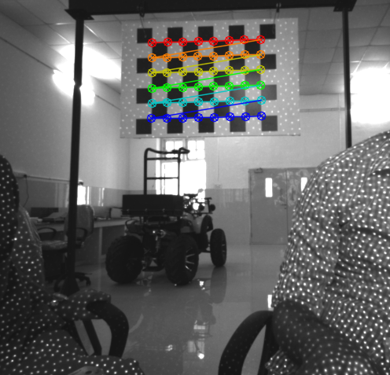
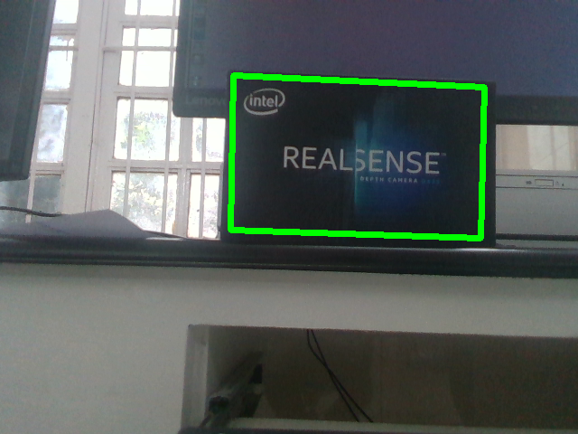

In this past two weeks I calibrated the intrinsic parameters of the Realsense and created a launch file that runs all the necessary programs to process and visualize the RGB_D Data acquired by the Realsense. This launch file already includes the respective .yaml files to calibrate the rgb and the depth of the sensor.

Using the recorded rosbag I continued to process the RGB_D data based on the feature points trained by SIFT and FLANN matcher. After that i draw a 2D bounding box around the object trained by finding the corner pixel values of feature points. Then, i was able to determine the centroid of a simple box and its normal.

To do so I started by calculating all the normals of the entire surface and determine the center of it. Afterwards it was necessary to define which of the points of the RGB_D data was closer to the center of the surface and determine its corresponding normal. The visualization of the centroid and its normal is shown below.